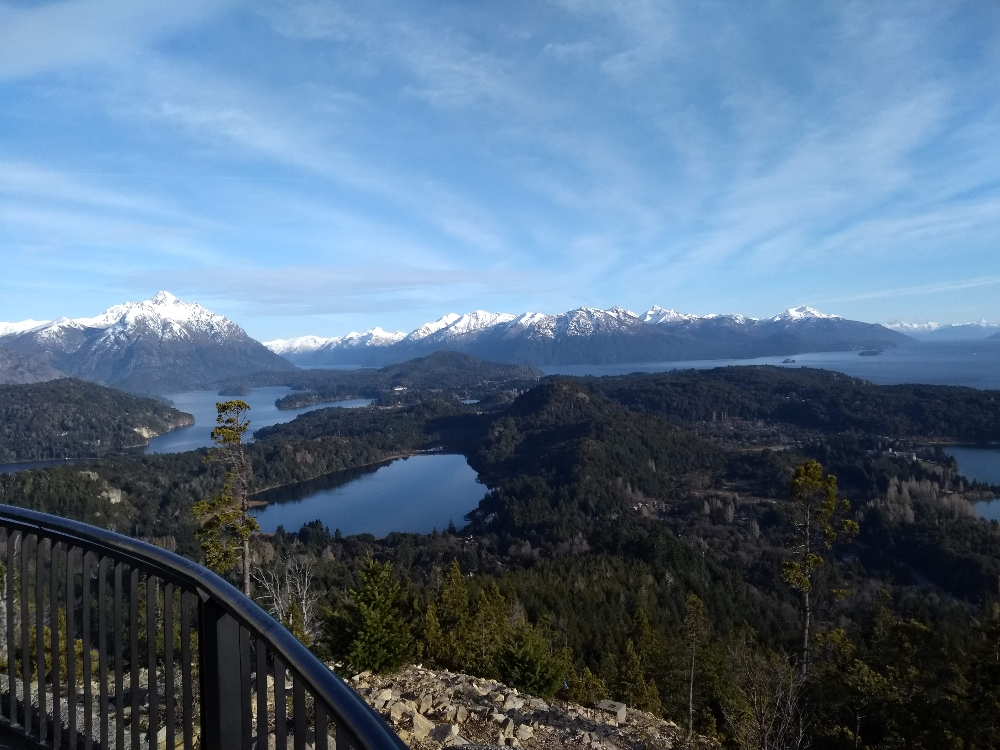
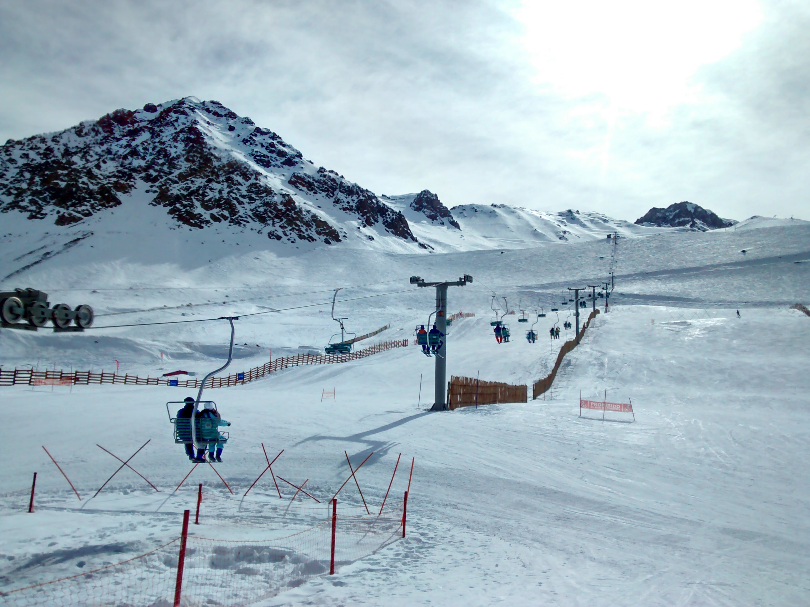

Cerro Campanario
Un cerro que se caracteriza por las impactantes vistas que ofrece desde su cumbre, que muchos diarios de viajes destacan como las “mejores del mundo”. Una serie de miradores nos permite asomarnos a paisajes excepcionales.

Penitentes, Mendoza
El centro de esquí Penitentes se encuentra a escasos 180 kilómetros de Mendoza y muy cerca del país trasandino de Chile. La calidad de su nieve es excelente en cada una de las pistas que conforman el recorrido.

Glaciar Perito Moreno
Desde El Calafate al Glaciar Perito Moreno media una distancia de 80 km pavimentados. En los primeros 40 km se recorre la estepa patagónica, pasando posteriormente a la entrada del Parque Nacional.